Исследования
Ai2 открыла AstaBrief 8B для научных отчётов со ссылками
AstaBrief 8B генерирует отчёты по научной литературе со ссылками. Доступны веса, данные и пример локальной работы с PDF.
Ai2
2 окт. 2026 г.Академические прорывы, технические разборы и новые работы в области ИИ — от ведущих лабораторий и университетов.
123 материалов
AstaBrief 8B генерирует отчёты по научной литературе со ссылками. Доступны веса, данные и пример локальной работы с PDF.
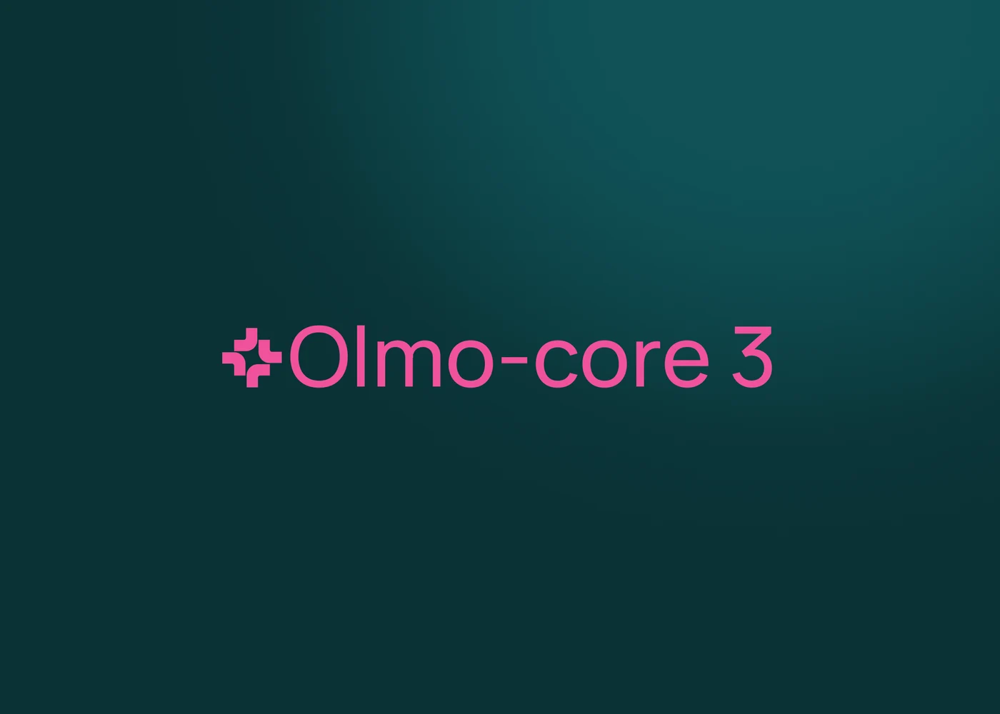
Ai2 открыла стек MoE-обучения. Прирост 2,7 раза относится к конкретному тесту; проверки триллионного масштаба имеют ограничения.

Oracle сократила 21 000 человек: ради строительства датацентров для ИИ компания берёт на себя $120 млрд долга.

ByteDance представила Seedance 2.5 — видеомодель, создающую ролики до 30 секунд без склейки, с поддержкой смены сцен и 50 входных файлов.

Cursor раскрыл детали собственной LLM, анонсировал Git-сервис для агентов и мобильное приложение для управления кодом.

OpenAI выпустила GPT-5.5-Cyber, новый эталон в кибербезопасности, и обновила Codex Security. Партнёрская сеть включает 25+ компаний и правительства.
Google DeepMind сделала Interactions API основным интерфейсом для Gemini, заменив generateContent.
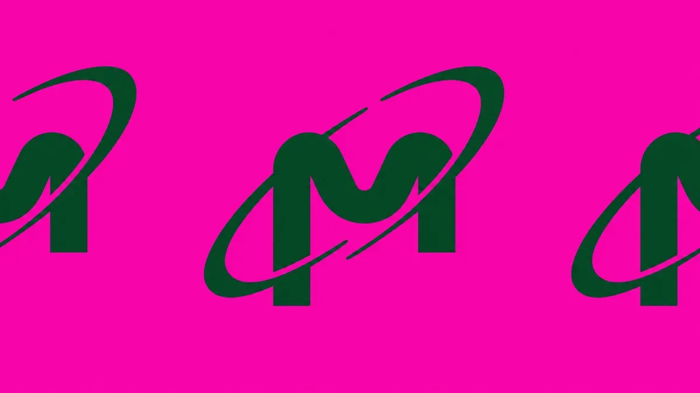
Micron инвестировала в Anthropic и будет поставлять HBM и SSD для обучения Claude.
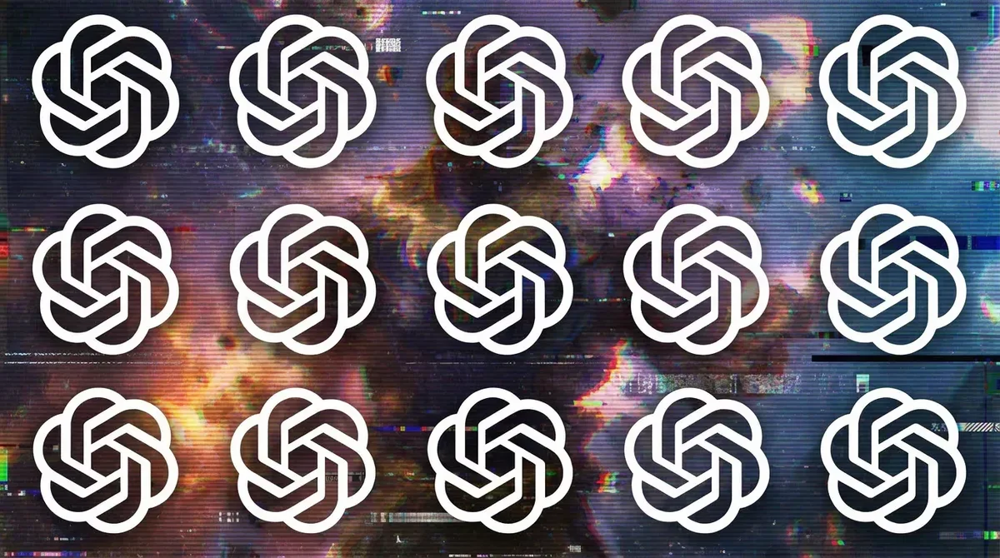
Getty Images интегрирует лицензионные фото в ChatGPT: акции взлетели на 200%
Google DeepMind и A24 запускают исследовательское партнёрство по ИИ в кинопроизводстве

Five Eyes: передовые ИИ-модели изменят кибероперации за месяцы
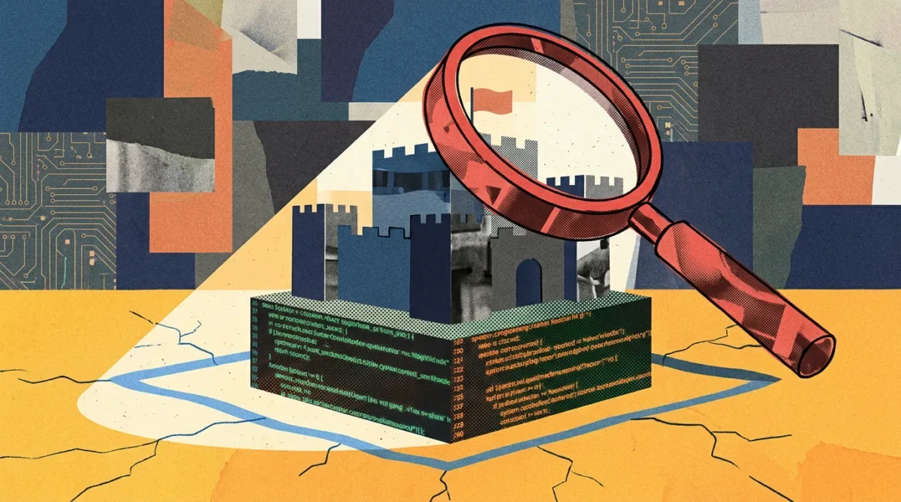
Как консалтинговая фирма с помощью ИИ за несколько часов создаёт прототипы софта, влияющие на миллиардные сделки.

Anthropic столкнулась с экспортным запретом на свою модель Mythos после споров с правительством США.

Samsung разворачивает ChatGPT Enterprise и Codex в Южной Корее

Fugu от Sakana ИИ — оркестратор LLM, сравниваемый с Anthropic и снижающий зависимость от одного вендора
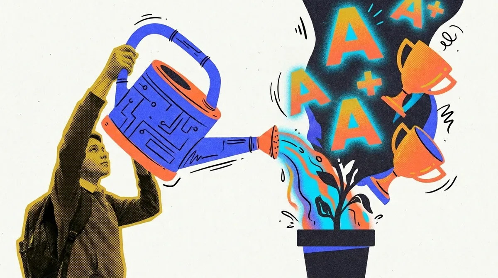
Рост оценок A на 30% после ChatGPT — не заслуга студентов, а следствие использования ИИ в домашних заданиях
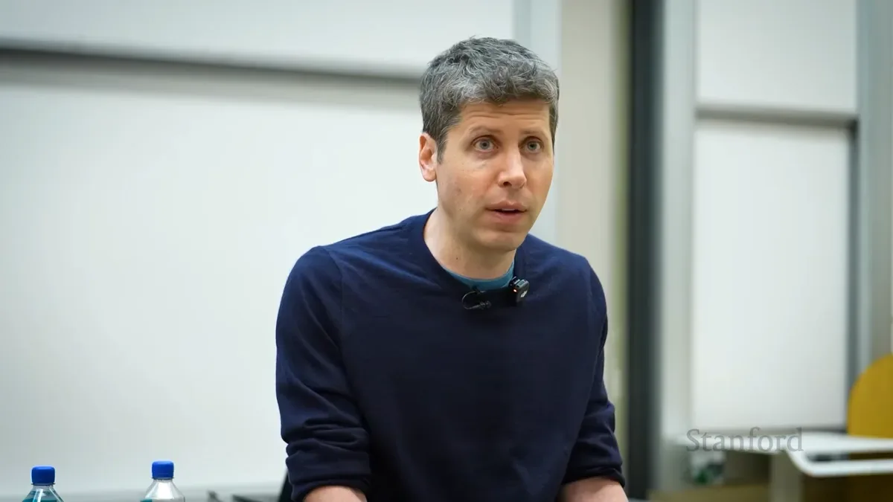
Сэм Альтман ответил критикам масштабирования ИИ: данные подтверждают успех, но есть ограничения.
AWS закрывает пробелы в безопасности и контексте ИИ-агентов
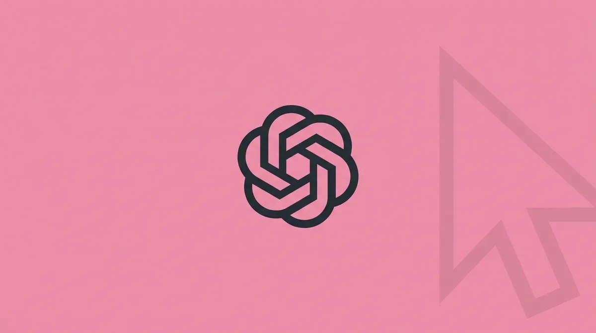
OpenAI Codex научился запоминать рабочие процессы и повторять их автоматически после одного показа.
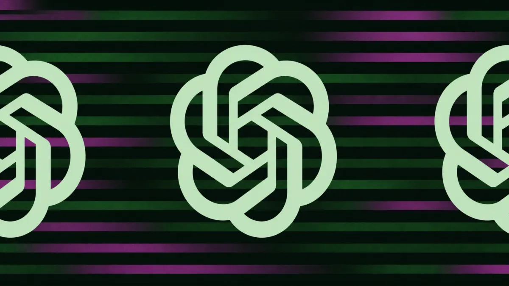
OpenAI централизовала управление задачами в ChatGPT: новый раздел 'Scheduled' позволяет гибко настраивать повторяющиеся действия.

OpenAI втрое нарастила выручку до $5,7 млрд, но потратила $3,7 млрд — половина ушла на компенсации акциями.
Google DeepMind теряет ещё одного топ-исследователя: Джон Джампер уходит в Anthropic
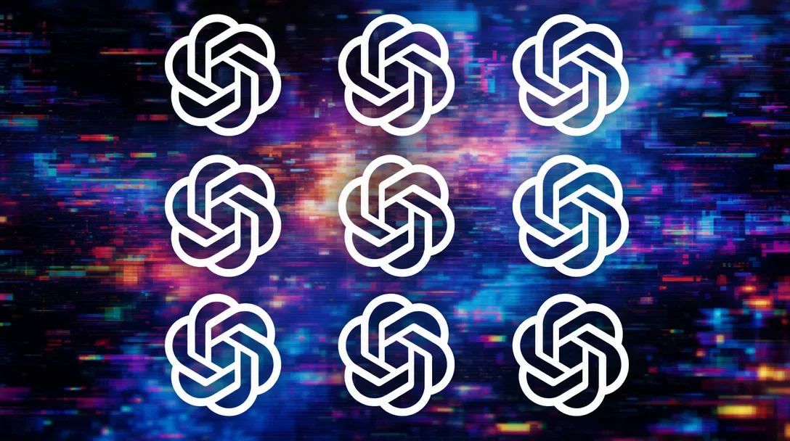
Amazon отказался от фильма об OpenAI, несмотря на почти завершённый монтаж — причиной могла стать сделка на $50 млрд.
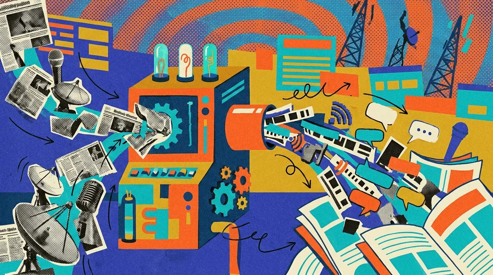
Пользователи чатботов для новостей выросли до 10%, но доверие остается низким — данные Reuters Institute.
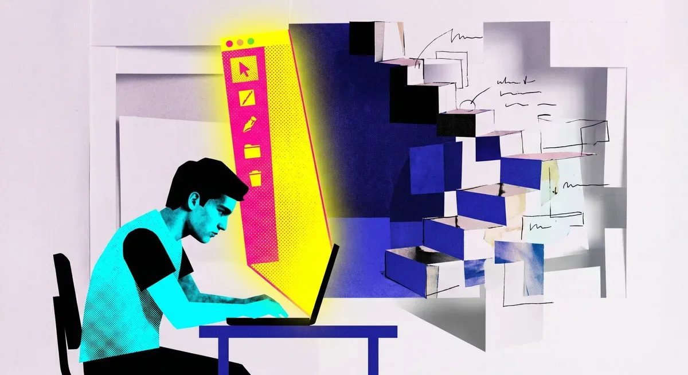
Топ-модели ИИ терпят неудачу в реалистичных офисных задачах: максимум 3% успеха.
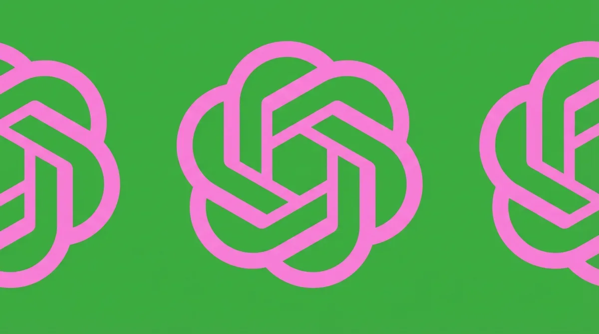
Маленькая доза «правильного» обучения делает ИИ честнее сразу во всех областях — исследование OpenAI
Бывшие сотрудники OpenAI сделали сайт, который показывает ваш «рейтинг» внутри языковых моделей
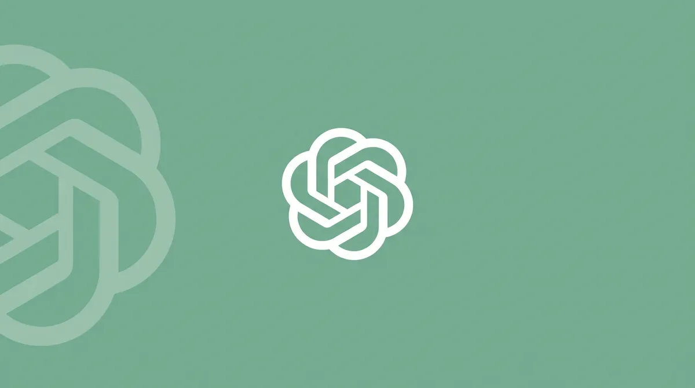
GPT-5.5 Instant обошёл врачей в медицинских тестах — и доступен бесплатно
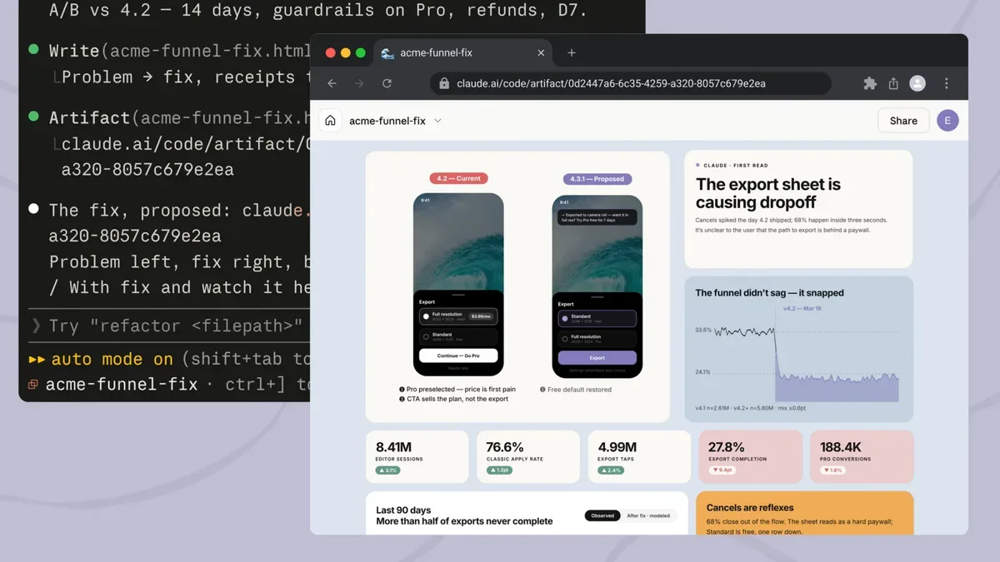
Claude Code теперь превращает сессию разработки в живую веб-страницу для всей команды
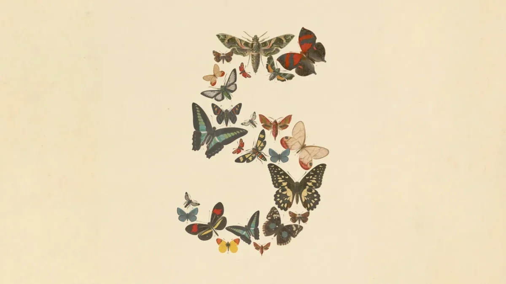
Как подозрения в китайских связях SK Telecom и дыры в безопасности Fable 5 уничтожили доверие к Anthropic